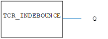

I/O Function.
Read the IN_DEBOUNCE time.
|
Q : SINT; |
The number of servo cycles for which the input must remain in a steady state for before the ON/OFF value is passed to a program. |
The inputs go to the set state after the voltage has been either 24 or 0 for the IN_DEBOUNCE time in servo cycles. The selected debounce time is applied to all inputs when read in a program using the Motion iX IN function or the equivalent IN binding in the IEC 61131-3 language.
Registration input functionality is not affected by the IN_DEBOUNCE value.
Value = TCR_INDEBOUNCE;

Not available.